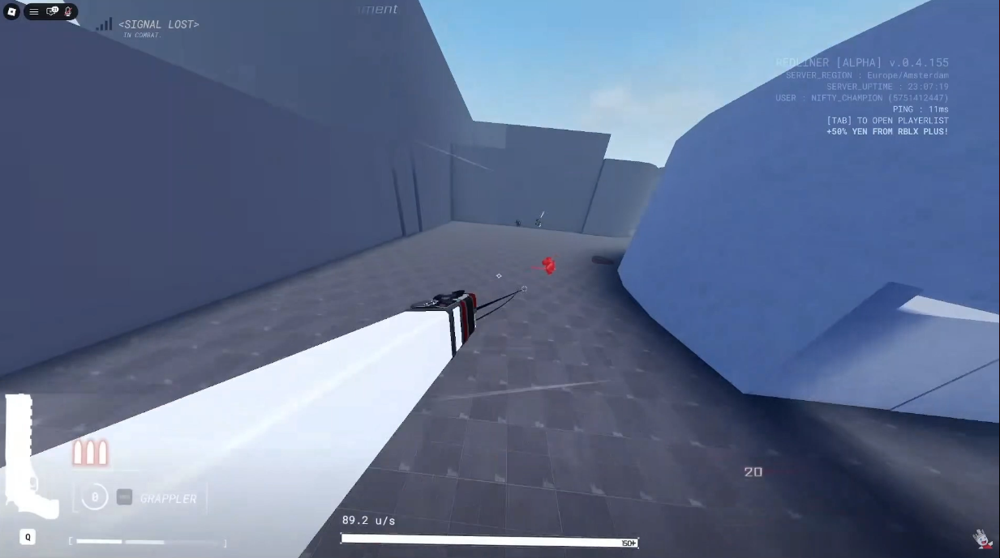
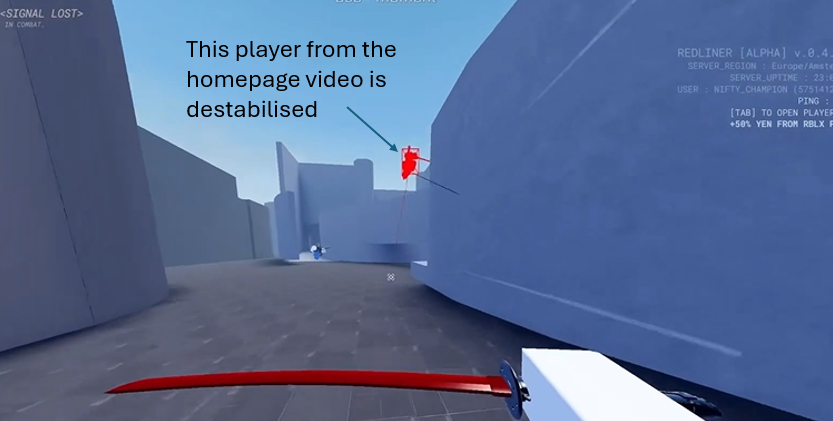

SPEED is everything in REDLINER. Knowing all of the best methods to gain, maintain and utilise your speed allows you to tip the engagment towards yourself through all the advantages that speed provides.
MOVEMENT BASICS
Dashing, Grappling, B-Hopping and Strafing
If you walk forward while holding jump, you will B-Hop, preserving your momentum as you have almost no contact with the ground.
If you then hold a direction key (A or D) and slowly turn your camera to the respective side (slowly, as in 180 degrees every 1.5 seconds) you will start steadily building momentum.
You can dash with [Shift].
Dashing will propel you in the direction you are moving and facing at about 110u/s, stabilising to roughly 80u/s if you B-Hop immediately after.
You can dash upwards if you hold W and look up or hold S and look down. We will get into why this is important later.
You can use your grappling hook with [RMB] (mb2).
Your grappling hook will attach to the object at which you are aiming at and is in range.
The grappling hook can also attach to players, as long as they are high enough off the ground, and attaching to a player gives you a massive speed of 200-300u/s.
Otherwise, using the grappling hook properly can consistently give you 120+ u/s.
The grappling hook a special slam ability, where if you are high enough off the ground and are looking at the ground at a sharp enough angle, you will perform a slam, which is a faster grapple that when colliding with the ground will propel any enemies in a short radius up high into the air and give them 60% instability. If missed, you will get roughly 25% instability, and if parried, you will get the 60% instability instead.

ADVANCED MOVEMENT TECHNIQUES
Back-Dash-Grapple (BDG)
In order to perform the BDG you must hold or tap [S] then [Shift] within very short succession, then press [RMB] onto the ground infront of you.
Upon successful execution, this technique slingshots you forward at high speeds, as for some reason the opposing forces of the backwards dash and the forward pull create significantly more horizontal velocity than just grappling onto the ground normally.
To the left is a video demonstrating this technique being used to its full potential, where it was used to achieve a speed of 140+ u/s.
This technique is among the most powerful in the game, as more than 130 u/s consistently is hard to come by through the use of any other techniques.
Slam cancel (AKA sage slam)
In order to perform the slam cancel you must first be high enough to perform a grapple slam, and while doing so, hold [Ctrl] until you land on the ground, and release [Ctrl] and start B-Hopping immediately after.
If executed correctly, this tech will consistently grant you 120-130 u/s.
Although this seems lower than BDG, it has its advantages as you cannot perform BDG midair.
The usefulness of the dash's ability to dash upwards if you are looking down and holding S comes in here as it allows you to do a slam cancel even if you are standing on the ground.
Although using it that way is mostly irrelevant due to BDG's superiority on the ground, it may help you avoid an opponent's attacks while safely gaining momentum.
SWORD CLASHING AND INSTABILITY

Being destabilised...
...Means that you cannot attack or parry for 5 seconds.
The image to the left shows what it looks like when another player is destabilised.
You can see this glowing red aura through walls, as referenced in the MONARCH's description.
There are many ways to get instability, but the primary and most deliberate way is through sword clashing.
Sword clashing works very simply, where two people must swing their sword at the same time at eachother, inflicting instability onto both people.
Instability is marked as a bar at the top of your screen.
The person who is moving faster in a sword clash inflicts signficantly more instability onto their opponent than onto themselves.
Parrying anything also provides instability for yourself, varying based on the attack's intensity.
The advantages of a destabilised opponent should be incredibly obvious, as they are a sitting duck for you to damage as long as you can catch up with them (or if you own the MONARCH, of course).